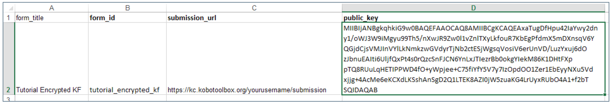
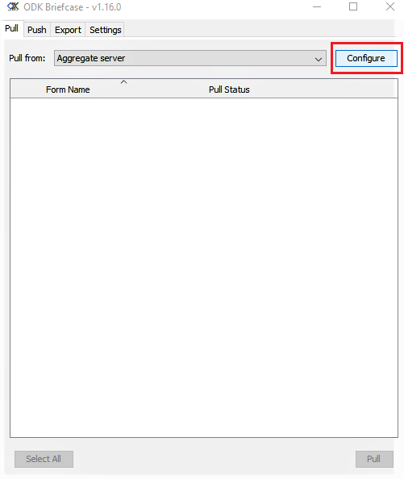
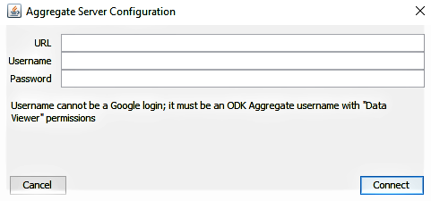
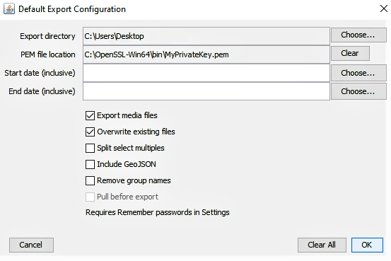
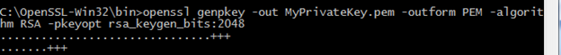

Busca en nuestra documentación, explora nuestros recursos y visita nuestro Foro de la Comunidad para obtener información más detallada
Última actualización: 4 nov 2024
Este procedimiento es bastante técnico y está dirigido a usuarios que se sienten cómodos con instrucciones técnicas avanzadas y requiere una atención estricta a los detalles.
Los formularios cifrados funcionan cifrando los datos en el teléfono en el momento en que se guardan. Los datos enviados a KoboToolbox están cifrados y son completamente inaccesibles para cualquier persona que no posea la clave privada. En este caso, KoboToolbox funciona simplemente como un casillero de almacenamiento para tus archivos cifrados: un lugar donde cargarlos y luego descargarlos para descifrarlos localmente (usando ODK Briefcase). Dado que los envíos del formulario están cifrados, cualquier función que requiera acceso a los datos, como la vista de mapa o la exportación de datos, no funcionará dentro de KoboToolbox. El nivel adicional de seguridad hace posible usar KoboToolbox para recolectar datos sensibles cumpliendo con ciertos protocolos de protección de datos.
KoboCollect permite cifrar el contenido de un formulario en el momento en que se marca como completado y listo para enviar en el teléfono. Para aprovechar esta función es necesario usar una clave de cifrado pública que se incluye en el XLSForm y una clave privada (que nunca se comparte) que ODK Briefcase utiliza para descifrar los datos localmente después de descargarlos desde KoboToolbox. La clave pública se usa para cifrar los datos, mientras que la clave privada los descifra. Solo una persona que tenga la clave privada puede descifrar los datos cifrados con la clave pública. Para obtener más información sobre la infraestructura de claves públicas y privadas, consulta aquí.
Crea tu formulario en KoboToolbox como de costumbre. Descarga el formulario desde la lista de borradores como archivo XLS.
En el archivo descargado, ve a la hoja settings.
Añade una columna submission_url y escribe
https://kc.kobotoolbox.org/submission o
https://kc-eu.kobotoolbox.org/submission (según
el servidor que estés usando).
Añade otra columna public_key (es decir, base64RsaPublicKey). Pega tu clave pública compatible.
(Consulta la imagen a continuación como referencia)

Carga el archivo XLS de nuevo en KoboToolbox. Puedes importarlo de nuevo a la lista de borradores de formularios y luego implementarlo como un nuevo proyecto de encuesta, o importarlo directamente a tu lista de proyectos implementados. Una vez implementado, deberías ver una etiqueta con el texto «encrypted» junto al nombre de tu formulario.
Ten en cuenta que la URL para un usuario autenticado ya no incluye **tunombredeusuario** según las actualizaciones recientes.
ODK Briefcase se usa para descargar los archivos cifrados desde KoboToolbox y descifrarlos localmente en tu computadora usando una clave privada, lo que garantiza el acceso exclusivo a los datos. Para que el descifrado sea exitoso con ODK Briefcase, asegúrate de descargar e instalar los Java Cryptography Extension (JCE) Unlimited Strength Jurisdiction Policy Files 6 desde el sitio de descarga de Java. Esto es necesario para que el descifrado sea exitoso.
Descomprime el archivo zip descargado.
Navega al árbol de directorios extraído y copia los archivos local_policy.jar y US_export_policy.jar al directorio lib\security.
Pega estos archivos dentro del directorio de instalación del Java Runtime Environment (JRE) de tu computadora, reemplazando las versiones anteriores de estos archivos.
En Windows, el JRE generalmente se instala aquí: C:\Program Files\Java\jre7\lib\security
En OSX, la ubicación es /Library/Internet Plug-Ins/JavaAppletPlugin.plugin/Contents/Home/lib/security
Descarga y abre ODK Briefcase.
Especifica una Storage Location en la pestaña Settings.
Abre la pestaña Pull y haz clic en Configure.

Luego ingresa lo siguiente:
https://kc.kobotoolbox.org O
https://kc-eu.kobotoolbox.org (según el servidor que uses)
Tu nombre de usuario
Tu contraseña
Haz clic en Connect cuando termines

Ten en cuenta que las URL del servidor indicadas arriba ya no necesitan incluir **tunombredeusuario** según las actualizaciones recientes.
Se muestra una lista de proyectos. Selecciona el proyecto que deseas descargar y haz clic en Pull. Recibirás un mensaje Success en el Pull Status.
Ahora ve a la pestaña Export.
Haz clic en Edit Default Configuration para asegurarte de que tienes la PEM private key en la PEM file location.

Ahora marca el proyecto que deseas exportar y haz clic en Export.
Los datos se exportan como archivo CSV; ahora puedes ver los datos sin cifrar.
Para generar los pares de claves pública-privada RSA puedes usar el paquete de software OpenSSL, que viene preinstalado en OSX y Linux. En Windows debes descargar e instalar el paquete de software OpenSSL desde este sitio. (Nota: instala Win64 OpenSSL v1.1.1c en C: en lugar de la ubicación predeterminada C:\Program Files)
Nota: Recomendamos encarecidamente usar OpenSSL como se documenta a continuación para crear tu par de claves pública/privada, ya que otros métodos pueden no ser compatibles con el software.
Abre una ventana “cmd” de Windows.
Escribe el siguiente comando: cd C:\OpenSSL-Win32\bin para cambiar al directorio /bin dentro del directorio de OpenSSL.
Crea una clave privada de 2048 bits y escríbela en el archivo MyPrivateKey.pem escribiendo el siguiente comando y luego presionando Enter:
openssl genpkey -out MyPrivateKey.pem -outform PEM -algorithm RSA -pkeyopt rsa_keygen_bits:2048

Luego, extrae la clave pública correspondiente a la clave privada anterior. Escribe el siguiente comando y presiona Enter:
openssl rsa -in MyPrivateKey.pem -inform PEM -out MyPublicKey.pem -outform PEM -pubout

Ahora has generado dos archivos:
MyPrivateKey.pem: tu clave privada, que debes mover a un lugar seguro.
MyPublicKey.pem: tu clave pública, que puedes compartir con cualquier persona con quien desees compartir información de forma segura.
Abre MyPublicKey.pem con el Bloc de notas u otro editor de texto; tu clave pública es la cadena de caracteres muy larga e ininterrumpida,
e.g.:Tjhfur1K9+BRQ2USezIPbtyahbfuNqviI5Suhm8maA3JoELRHj9psjf/oNWoG87aFtKNbLrRaCEDP oFMDC9NEzWlv5L49BygeieMu/wg/rtMT0M0kgDbKxw5weJJgyb9P41aMsrqAAAAB3NzaC1yc2EAAAADAQAB AAABAQDfNoFX7bh3bfdW6lGfDht1Ea8PUBLKYjugbHN5jS7j5fHV6dexM+kzvITVgoyjhhKPXeCbaT62vD/ saTqJFXJzlysnZ24fqxNkjreO5K5EQ9c3ggwqML06+AKrFUSP5jpnyJJH8btNwKl6D5pG4ZseHwDUKzZtae xtPTNQz67kdYIKdtCkCsQHVsy4xvy/A0jzfK3xyOkG6j+L
Esta cadena es la que deberás pegar en el campo public_key de la hoja settings de tu archivo XLS.
IMPORTANTE: asegúrate de pegar únicamente la cadena de la clave pública, sin espacios en blanco ni saltos de línea.
MyPrivateKey.pem es el archivo que usarás al exportar los envíos con ODK Briefcase.
Nota: Al intentar editar un formulario que ha sido cifrado, recibirás el mensaje «This form cannot be edited once it has been marked as finalized. It may by encrypted».
¿Encontraste lo que buscabas? ¿Te ha parecido clara la traducción? ¿Faltaba algo?
¡Comparte tus comentarios para ayudarnos a mejorar este artículo!